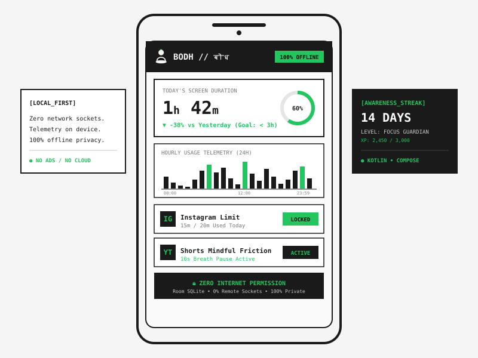

Bodh (बोध) Digital Wellbeing_

Overview
Bodh (बोध) is a privacy-first, local-only Android application engineered to help individuals break dopamine-fueled scrolling habits and reclaim focus through intentional friction. Unlike mainstream analytics apps that harvest behavioral data, Bodh operates on an uncompromising zero-network policy: the application does not request the Android `INTERNET` permission, guaranteeing that 100% of telemetry, hourly usage breakdowns, and application habits never leave the physical device.
Key Modules & Engineering
- Native UsageStats Telemetry: Integrates directly with Android's system-level `UsageStatsManager` to record exact foreground application duration and hourly distribution.
- Mindful Friction Gates: Custom configurable pause intervals (e.g. 10-second breath gates) before opening high-dopamine social apps.
- 24-Hour Hourly Histogram: Granular hourly bar graphs displaying usage spikes, peak distraction intervals, and day-over-day focus deltas.
- Awareness Streaks & Focus Tiers: Milestone challenges and mindfulness levels (Seeker of Calm, Mindful Observer, Habit Challenger, Focus Guardian, Bodh Master) rewarding consistent digital discipline.
- Zero Cloud / Zero Ads: Built with local Room SQLite architecture. Absolutely zero ad trackers, analytical SDKs, or cloud dependencies.
- Signed Production Build: Packaged with release keystore signing and ProGuard code optimization.
Philosophy in Action
FUNCTION OVER FRICTION: Technology should empower human intention, not exploit neurological vulnerabilities. By removing the internet socket entirely, Bodh proves that software can be powerful, insightful, and beautiful while maintaining sacred respect for user privacy.